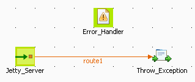
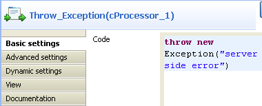
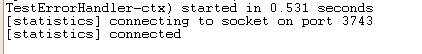

|
Component Family |
Exception | |
|
Function |
cErrorHandler provides multiple strategies to deal with errors processing an Event Driven Consumer. | |
|
Purpose |
cErrorHandler offers different strategies for error handling during the processing. | |
|
Basic settings |
Default Handler |
This error handler does not support a dead letter queue and will return exceptions back to the caller. |
|
Set Maximum Redeliveries: select this check box to set the number of redeliveries in the Maximum Redeliveries (int) field. | ||
|
Set Redelivery Delay: select this check box to set the initial redelivery delay (in milliseconds) in the Redelivery Delay (long) field. | ||
|
Set Retry Attempted Log Level: select this check box to select the log level in the Level list for log messages when retries are attempted. | ||
|
Asynchronized Delayed Redelivery: select this check box to allow asynchronous delayed redelivery. | ||
|
Use Original Message: select this check box to use the original message for redelivery. | ||
|
More Configurations by Code: select this check box to enter codes in the Code box for further configuration. | ||
|
Dead Letter |
This handler supports attempting to redeliver the message exchange a number of times before sending it to a dead letter endpoint. | |
|
Dead Letter Uri: select this check box to define the endpoint of the dead letter queue. Other parameters share the same meaning as those of the default handler. | ||
|
Logging Handler |
This handler logs the exceptions. | |
|
Set Logger Name: select this check box to give a name to the logger in the Name field. | ||
|
Set Log Level: select this check box to decide the log level from the Level list. | ||
|
Usage |
cErrorHandler provides multiple strategies to deal with errors processing an Event Driven Consumer. | |
|
Limitation |
| |
In this scenario, a Jetty server is started before a client browser requests access to it. Then an exception is thrown at the server side and logged by cErrorHandler.
Drop the following components from the Palette onto the workspace: cMessagingEndpoint, cErrorHandler and cProcessor, labelled as Jetty_Server, Error_Handler and Throw_Exception respectively.
Link cMessagingEndpoint and cProcessor using a Row > Route connection.

Double-click cErrorHandler to open its Basic settings view in the Component tab.

Select Logging Handler to log the exceptions that are thrown.
Double-click cMessagingEndpoint to open its Basic settings view in the Component tab.

In the Uri field, enter
jetty:http://localhost:8889/serviceto specify the Jetty server.Click Advanced settings for further setup.

In the Dependencies table, click the [+] button to add a line and select
jettyfrom the Camel component list.Double-click cProcessor to open its Basic settings view in the Component tab.
In the Code box, enter
throw new Exception("server side error")to throw an exception.Press Ctrl+S to save your Route.
Click the Code tab at the bottom of the design workspace to check the generated code.

As shown above, the route starts
fromthe endpointJetty_Serverand throws the exception ofserver side errorviacProcessor_1.Press F6 to execute the Route.
The Jetty server has started.
Launch an Internet browser and enter
http://localhost:8889/service(the Jetty server URI configured above) in the address bar to access the server.
As shown above, the request failed due to the server error.
Go to the Studio and check the results in the Run tab.

As shown above, cErrorHandler has logged the exception at the level of ERROR.